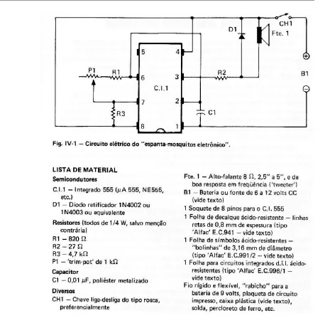
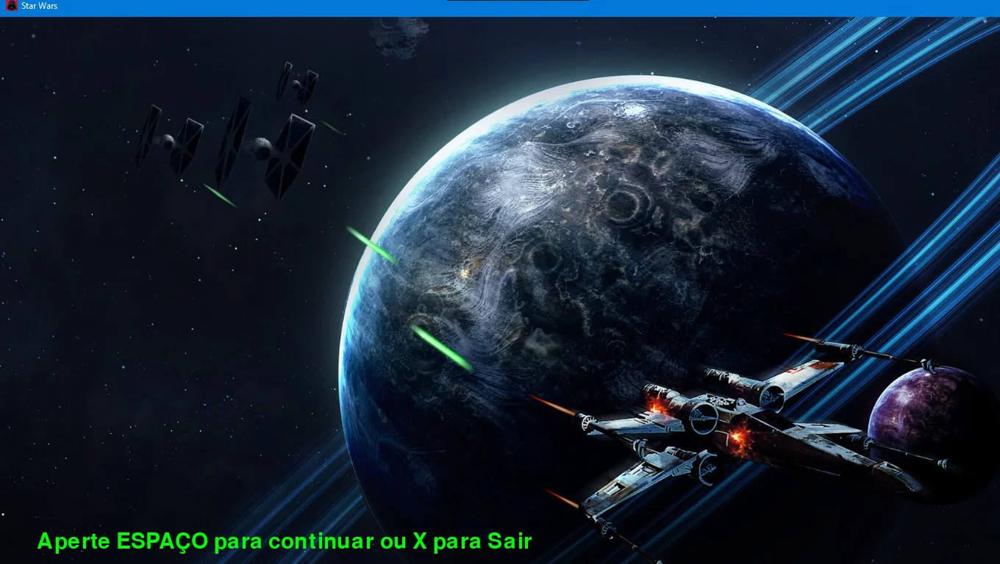
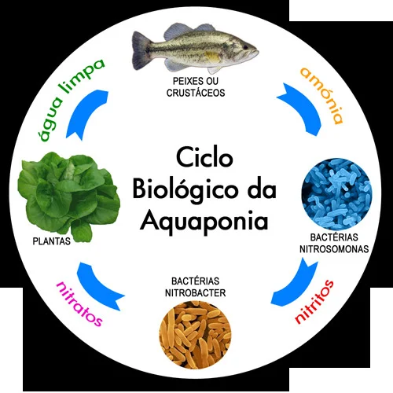

Formação
Montagem e Manutenção de Computadores e Redes: New Life (2013)
Técnico em Eletrônica: Instituto Estadual Cecy Leite Costa (concluído em 2022)
Ciências da Computação: Atitus Educação (em andamento)
Experiência Profissional
Estágio em Manutenção de Equipamentos de Refrigeração: Adroel Refrigeração (2020-2022)
Adroel Refrigeração: Gerente de Manutenção (2022 - presente)
Habilidades
Programação: C++, Java, Python


Eletrônica: Montagem e reparo de circuitos eletrônicos
Manutenção: Equipamentos de refrigeração comercial, computadores e redes
Comunicação: Escrita e verbal
Trabalho em equipe: Experiência em projetos colaborativos
Projetos
-
Desenvolvimento e Montagem de um Gerador Eólico
Montagem do circuito eletrônico e parte mecanica
Sistema interno de engrenagens para aumentar a velocidade do eixo do gerador

-
Desenvolvimento de um Espanta Mosquito Eletrônico
Oscilador que emite ondas sonoras para afastar mosquitos
Pode ser adaptado como espanta morcegos
 -
Desenvolvimento de um Freezer Cervejeiro Inteligente
Elevador interno entrega latinhas geladas na mão do usuário
Elaboração e programação de um sistema de controle inteligente
-
Elaboração e Programação de um Jogo
Jogador pilota uma nave para desviar de lasers
Dificuldade aumenta com o tempo
 -
Elaboração de um Projeto de Campainha para Deficientes Auditivos
Aviso luminoso e notificação no celular quando a campainha toca
Solução inclusiva para pessoas com deficiência auditiva
-
Elaboração de um Projeto para Aquaponia Residencial Automatizada
Sistema de aquaponia para produção de peixes e hortaliças em ambiente urbano
Automatizado para facilitar o manejo
